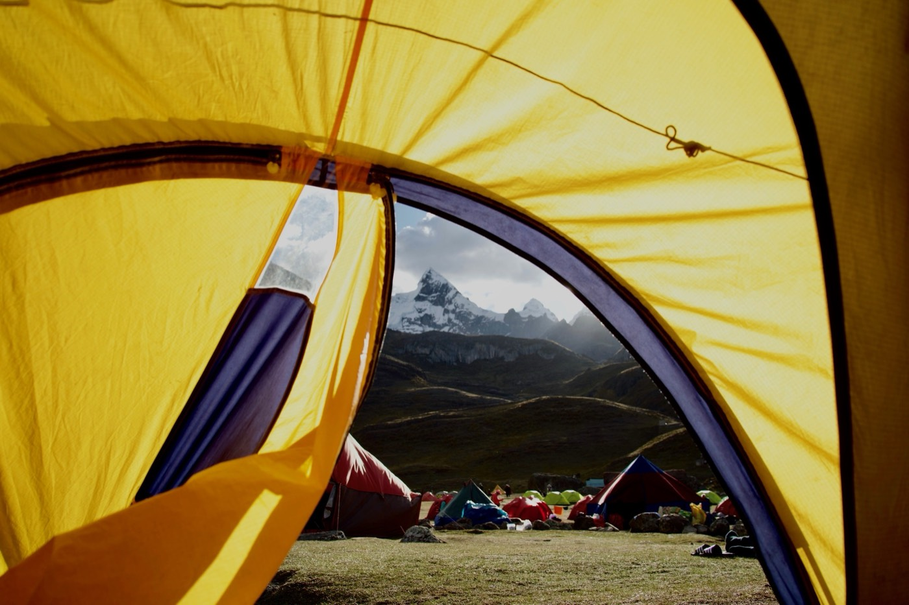
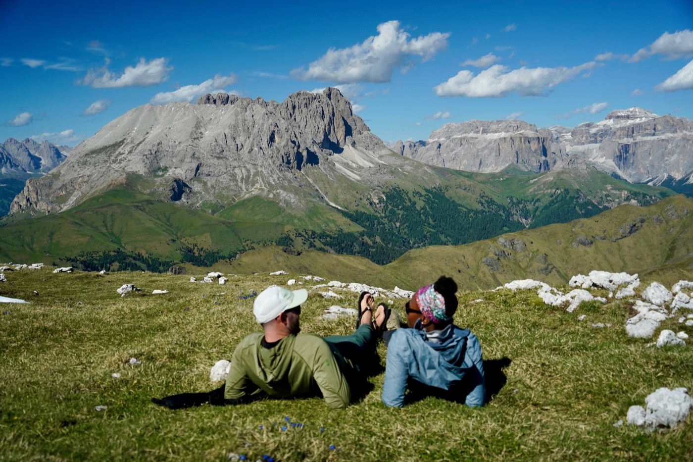
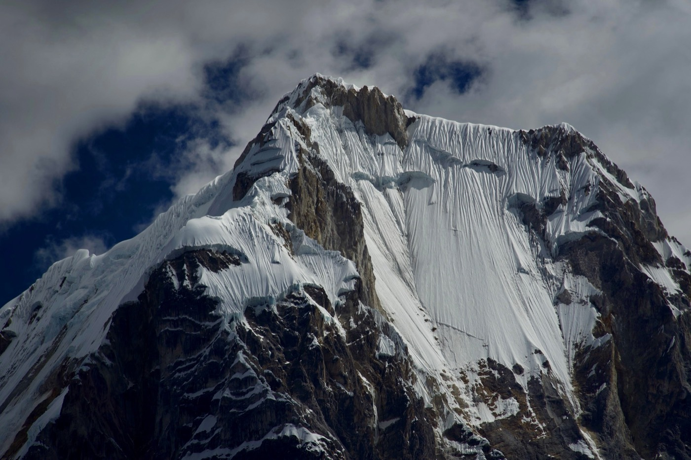
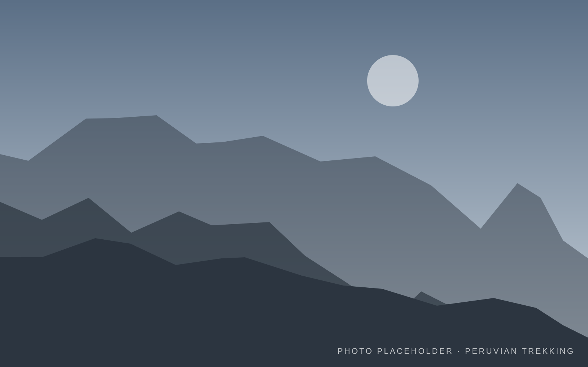

Follow the Lines
Guided & self-guided adventure trips in Peru, Ecuador, the Alps & beyond
Three Ways to Explore
Travel with our guides, go it alone with our planning behind you, or design an expedition from a blank map.

01 · GUIDEDGuided Expeditions
Small groups led by certified mountain guides. Permits, logistics, and safety handled.
View guided trips →
02 · UNGUIDEDUnguided Adventures
Our tested routes, bookings, and GPX tracks, with 24/7 support. You set the pace.
View unguided trips →
03 · CUSTOMCustomize Your Own Adventure
Have a line on the map in mind? We'll help plan it and connect you with guides worldwide.
Start planning →Signature Routes

GuidedPeruvian Trekking
A full circuit of the Cordillera Huayhuash — eight high passes, turquoise lakes, and Peru's second-highest peak.
 Guided
GuidedMountaineering Ecuador
A progressive volcano expedition — Cayambe, Cotopaxi, and an attempt on Chimborazo, the summit farthest from Earth's centre.
 Guided
GuidedDolomites Multisport
A week of variety in the Dolomites: hiking, WWI via ferratas, the Sella Ronda by bike, and an intro to alpine rock.
 Self-guided
Self-guidedDolomites Hut to Hut
Walk the Alta Via 1 at your own pace, from Lago di Braies to Belluno, with every rifugio booked and every turn mapped.
 Self-guided
Self-guidedMoroccan Surf Safari
Point breaks, desert light, and mint tea: a self-drive surf road trip from Essaouira to Sidi Ifni.
 Self-guided
Self-guidedBalkans Bike Backpacking
A ~700 km gravel loop through Bosnia & Herzegovina and Montenegro, from Mostar's old bridge to Durmitor's high plateau.
 Self-guided
Self-guidedSwiss Alps: Via Alpina
A demanding four-day hut-to-hut traverse through the Bernese Oberland, from Lauterbrunnen over two high passes to Kandersteg.
Less Logistics. More Altitude.
Routes We Know
Every trip is scouted and refined on the ground, with local partners who live in the mountains we visit.
Safety Built In
Certified guides, acclimatization schedules, satellite communication, and a 24/7 support line on every trip.
Small Footprint
Small groups, locally owned lodging, and fair wages for the arrieros, guides, and hosts who make it possible.
“Every detail was handled, so all we had to think about was the next pass. The Huayhuash ruined every other trek for me — in the best way.”— Guest name, Huayhuash 2026 Placeholder
Ready to Go Somewhere Wild?
Pick a route, or tell us where you've always wanted to go.
Explore Trips →